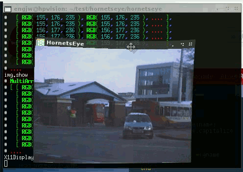
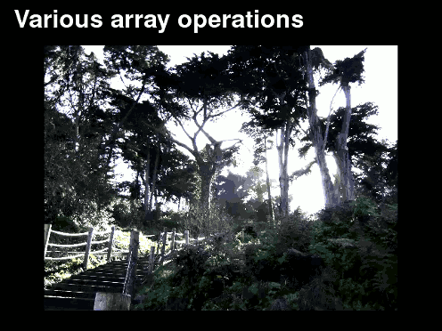

Features
HornetsEye offers image file-I/O, video input, access to webcams and framegrabbers, and access to firewire digital cameras by leveraging existing free software libraries. Furthermore HornetsEye has comprehensive support for array operations, e.g. element-wise unary and binary operations, folding, correlation, array views, custom element types, morphological operations, index operations, masks, and warps. It thightly integrates with existing Ruby extensions. Check out the demonstration videos below.
Demonstration Videos
Interactive Development

After installation you can use HornetsEye without having to compile or link anything! You can even develop computer vision algorithms on the command-line using Interactive Ruby.
See also
I/O and Array Operation

HornetsEye provides generic array operations and it offers a comprehensive set of I/O interfaces.